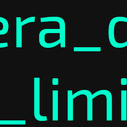

La entrada a la cueva, ahora accesible gracias al deshielo parcial, te lleva a través de un túnel serpenteante hacia las profundidades del planeta helado. Las paredes están cubiertas de una capa gruesa de hielo que refleja la luz de tu linterna, creando patrones hipnóticos de luz azul y blanca. El aire es tan frío que puedes ver tu respiración formando pequeñas nubes que se congelan casi instantáneamente.
La cueva es mucho más grande de lo que esperabas. Los techos se elevan a alturas impresionantes, y puedes escuchar el eco de tus pasos resonando en la distancia. Estalactitas gigantescas cuelgan como dagas de hielo, y el suelo está cubierto por una capa resbaladiza de hielo pulido que hace que cada paso sea una aventura.
Al final de la gruta principal, descubres una sala circular que parece haber sido preservada especialmente por el frío extremo. En el centro de esta sala, como si fuera una escultura de museo, se encuentra un dinosaurio completamente hecho de hojas que han sido totalmente congeladas. La criatura está en una pose dinámica, como si hubiera sido sorprendida en pleno movimiento y luego instantáneamente preservada por el hielo. Las hojas mantienen su forma y color original, creando una obra de arte natural extraordinaria.
Junto al dinosaurio fosilizado, hay un cartel con un cómic dibujado a mano que cuenta una historia en tres viñetas: En la primera viñeta, se ve claramente un depredador feroz en medio de una selva densa. En la segunda viñeta, varios muñecos de nieve están aplaudiendo mientras el animal muestra una expresión de sorpresa y miedo. En la tercera y última viñeta, el depredador se aleja corriendo con una cara que expresa claramente su odio hacia el sonido de los aplausos.
Colgado en una pared de hielo cristalino, también puedes ver un cuadro misterioso que muestra letras en azul neón brillante sobre un fondo completamente negro. Las letras están dispuestas de manera aparentemente aleatoria, sin formar palabras reconocibles ni seguir ningún patrón obvio que puedas discernir:
